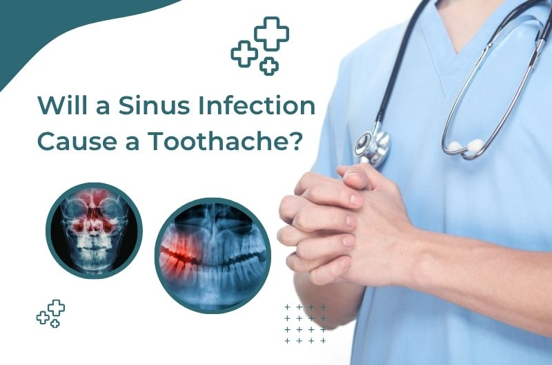

Yes, a sinus infection (sinusitis) can certainly cause a toothache, and this is actually much more common than you might think. You might wake up one morning feeling a throbbing pain in your upper teeth and panic, thinking, 'Oh no, I've got a toothache.' However, the real problem may not be with your teeth, but in the sinus cavities just above them.
Why do sinuses cause toothache?
The reason for this surprising connection in our bodies is purely anatomical. The maxillary sinuses (the cavities behind your cheekbones) are situated directly above your upper back teeth. In fact, in many people, the roots of the upper molars extend right down to the floor of these sinuses or even directly into the sinus cavity itself.
When you have sinusitis, these cavities become inflamed, swollen, and filled with fluid (mucus). This accumulated fluid and swelling exert direct pressure on the tooth roots and nerve endings immediately below. Your brain sometimes misinterprets this pressure signal, perceiving it as an actual toothache; this is known in medicine as 'referred pain.'
Sometimes the opposite can also occur. A deep infection or abscess in the upper teeth can spread upwards and lead to sinusitis (this is known as odontogenic sinusitis). If your toothache is very severe in a single tooth, if your gums are swollen, or if your pain persists for more than 10 days despite sinus treatment, you must see a dentist. A dentist can clearly identify the true source of the pain using an X-ray or 3D imaging (CBCT).
How can you tell sinus toothache from a dental problem?
To distinguish a toothache caused by sinusitis (sinus-related toothache) from a normal dental problem, the location, type, and triggers of the pain, as well as any accompanying symptoms, must be carefully examined.
Location and spread of pain
- Sinus-related: Usually affects several upper back teeth (molars and premolars) at once. This is because the roots of the upper molars are very close to the maxillary sinuses or, in some cases, extend into the sinus cavity. The pain is often bilateral.
- Normal toothache: Usually felt in a single tooth, and the source of the pain can be clearly identified.
Type and nature of the pain
- Sinus-related: Usually a dull, constant ache or a feeling of pressure. You may feel as though your teeth are 'annoyed' (under irritating pressure).
- Normal Toothache: Usually a sharp, stabbing, throbbing, or intense pain. The pain may be more severe in cases of decay or an abscess.
Triggering factors
- Sinus-related: Varies with head movements. In particular, bending forward, going down stairs, jumping, or lying down exacerbates the pain and pressure.
- Normal toothache: Usually triggered by sensitivity to hot or cold or sweet foods or pressure (chewing). Changes in position generally do not affect this pain.
Associated symptoms
- Sinus-related: Toothache is accompanied by symptoms such as nasal congestion, post-nasal drip, a sensation of pressure and fullness in the face (cheeks and forehead), headache, loss of smell, or bad breath. Yellow or green nasal discharge may also be present.
- Normal toothache: Oral symptoms such as swelling and redness of the gums, visible cavities on the tooth, or receding gums may be present.
Comparison table: Sinusitis pain vs. Dental pain
|
Feature |
Sinus-Related Pain |
Dental Origin Pain |
|
Number of Teeth Affected |
Usually affects multiple upper back teeth simultaneously. |
Typically isolated to one specific tooth or a pinpointed area. |
|
Type of Pain |
Described as a dull, constant ache or throbbing pressure. |
Often sharp, jabbing, intense, or shooting pain. |
|
Effect of Leaning Forward |
Pain intensifies or worsens when bending over or moving the head. |
Usually no major change with positional or head movements. |
|
Heat/Chewing Sensitivity |
Generally absent; the teeth might feel "annoyed" by pressure but usually don't react to temperature. |
Pronounced; triggered by biting, temperature changes (hot/cold), or sweets. |
|
Associated Symptoms |
Accompanied by nasal congestion, facial pressure, postnasal drip, or headaches. |
May involve swollen gums, visible decay, gum recession, or localized redness. |
What tests do dentists use to distinguish between sinusitis and dental problems?
Dentists follow a comprehensive diagnostic process—including a clinical examination, patient history, and advanced imaging techniques—to determine whether the pain is caused by sinusitis or an actual dental problem.
The key tests and methods dentists use to make this distinction:
Clinical and physical tests
- Percussion test: The dentist checks for sensitivity by gently tapping each tooth. If the pain is concentrated in a single tooth, this is usually tooth-related; however, if there is mild sensitivity across all the upper back teeth, this may indicate sinus pressure.
- Thermal (Hot/Cold) tests: Cold or hot stimuli are applied to check the vitality of the tooth's nerve. In cases of pain caused by sinusitis, the teeth generally do not react excessively to these temperature changes, whereas in dental infections (pulpitis), a sharp and prolonged pain is triggered.
- Palpation (Touch) test: The dentist applies pressure to the gum area or directly to the zygomatic bone region where the sinuses are located to try to identify the source of the tenderness.
- Bite (Mechanical) test: The patient is asked to bite down on a specific area. Tooth-related pain typically worsens with chewing or biting pressure, whereas this trigger is rarer in sinus-related pain.
- Mobility (Wobbling) test: The teeth are checked for wobbling to determine whether the infection has spread.
Imaging techniques
- Periapical X-ray: Used to examine the root tip of a single tooth and the surrounding bone tissue in high resolution; it is effective in identifying abscesses at the root tip.
- Panoramic X-ray: Shows the entire upper jaw and the lower borders of the maxillary sinuses in a single plane. 'Haziness' or opacity in the sinuses can be detected with this X-ray.
- CBCT (cone-beam computed tomography): Provides a detailed 3-dimensional image of the teeth, jawbone, and sinus cavities. This technology is the gold standard for determining whether pain is caused by sinus pressure or by a hidden root tip infection that has spread into the sinus.
- Waters view: A specialized radiological imaging technique used to visualize the air/fluid levels and the degree of filling within the sinuses more clearly.
Patient history and physical movement assessment
When making a diagnosis, the dentist combines the answers to the following questions and their observations with the test procedure:
- Positional Change Test: The patient is asked to bend forward or move their head. If the pain worsens when bending forward or jumping, this is a strong indication of sinusitis.
- Symptom Inquiry: The patient is asked whether they have recently had a cold, nasal congestion, or bad breath (halitosis).
How long does sinus tooth pain last?
If you are experiencing a toothache caused by sinusitis, the duration of this condition depends entirely on the type of underlying sinus infection (acute or chronic) and how you respond to the treatment.
Acute Sinusitis: From a few days to a few weeks
If your toothache is caused by 'acute' sinusitis that develops following a cold or an allergy:
- Mild cases: These usually resolve on their own within a few days or with simple home care (steam inhalation, saline sprays).
- Standard duration: Symptoms of acute sinusitis usually last 7 to 10 days. As the inflammation in the sinuses subsides and the pressure decreases, the pressure on the tooth roots also disappears.
- Cutoff point: It can last up to 4 weeks; however, pain lasting longer than this begins to fall outside the scope of 'acute.'
Chronic sinusitis: A 'dull' ache that can last for months
When a sinus infection becomes chronic, the toothache can also become much more persistent:
- More than 12 weeks: In cases of chronic sinusitis, that common, dull pain felt in the upper back teeth can last for more than 12 weeks (3 months).
- This type of pain is not usually constant; it may ebb and flow depending on the pressure in the sinuses or the position of your head.
Odontogenic sinusitis: Treatment is essential
If the infection has spread from a problem in the tooth (such as a cavity or abscess) to the sinuses, rather than originating in the sinuses themselves, the pain will never go away on its own.
- In this case, taking antibiotics provides only temporary relief; unless the underlying problem—the tooth—is treated (via root canal treatment or extraction), the sinusitis and associated pain can persist for months.
What can be done to speed up the recovery process and feel better?
To reduce the duration of the pain, the focus should be on draining the sinuses:
- Home care: Steam inhalation, warm compresses, and drinking plenty of water can thin the mucus and quickly reduce pressure.
- Medication: Decongestants or nasal sprays, used on a doctor's advice, can open up the sinus passages and relieve the pressure on the teeth within a few days.
When should you say 'Stop'?
Sources emphasize that you should consult a professional without delay in the following situations:
- If your toothache has lasted for more than 10 days.
- If the pain is getting worse or is concentrated in just one tooth.
- If you have swelling in your face, a fever, or signs of an abscess in your gums.
How is tooth pain from a sinus infection treated?
The following methods are used to relieve toothache caused by sinusitis and address the underlying issue:
Home remedies
If the pain has just started and is mild, increasing drainage from the sinuses can quickly reduce pressure on the tooth roots:
- Hydration (drinking plenty of fluids): Drinking water thins the mucus in the sinuses and makes it easier to clear naturally.
- Inhaling steam: Taking a hot shower or inhaling steam from a bowl of hot water (for 7-10 minutes) can relieve toothache by clearing congestion.
- Nasal rinsing with salt water: Rinsing the nasal passages using saline (salt water) sprays or devices such as a neti pot clears mucus and directly reduces pressure.
- Warm compress: Placing a warm cloth on your face, over your cheekbones, increases circulation in the sinuses and reduces pressure.
- Keeping your head elevated: Elevating your head with extra pillows while lying down helps the sinuses drain more effectively and prevents toothache from worsening at night.
Medication
If the pain and inflammation persist, over-the-counter or prescription medicines may be required:
- Painkillers: Medicines such as ibuprofen or acetaminophen (paracetamol) relieve both the toothache and any accompanying headache.
- Decongestants: Nasal sprays or oral decongestants reduce swelling in the sinus tissues to improve drainage; this also relieves the physical pressure on the tooth roots.
- Antibiotics: If the sinusitis is a bacterial infection, your doctor may prescribe antibiotics to clear up the infection.
Professional dental and medical interventions
Specialist support is essential when the source of the pain is unclear or when treatment fails to produce a response:
- Dental examination: A dentist will take an X-ray (or a 3D CBCT scan) to determine whether the pain is actually caused by sinusitis or by an underlying cavity or abscess.
- Treatment of odontogenic sinusitis: If the source of the infection is actually a dental infection rather than the sinus (this occurs in 10-40% of cases), root canal treatment or extraction of the tooth must be performed first for the sinusitis to resolve.
- Endoscopic sinus surgery: In chronic cases that do not respond to medication, an ENT specialist may surgically open the sinus passages. This operation usually stops the toothache immediately.
Sinus infection and toothache: FAQs
Can sinus infections cause toothaches?
Yes, the pressure from the sinuses can affect the roots of the upper teeth and cause pain.
Can a sinus infection cause pain in the lower teeth?
It's not common, but there are times when the pressure spreading can be unpredictable. Sinus infections tend to affect the upper teeth. The maxillary sinus cavities are close to the roots of the upper back teeth, and these are the most commonly affected. The pain is usually felt in more than one tooth, not in a single isolated tooth.
Can sinus infections cause jaw pain and headaches?
Yes. Sinus inflammation can cause pressure in your face that can spread down to your jaw, cheeks, temples, and forehead. Many people first think that these symptoms are TMJ problems or tooth infections.
Can allergies cause a toothache that feels like dental pain?
Yes. Seasonal allergies cause inflammation and congestion, which can lead to increased pressure inside the sinus cavities. This pressure can radiate to the upper teeth, especially during allergy attacks, and be described as a toothache.